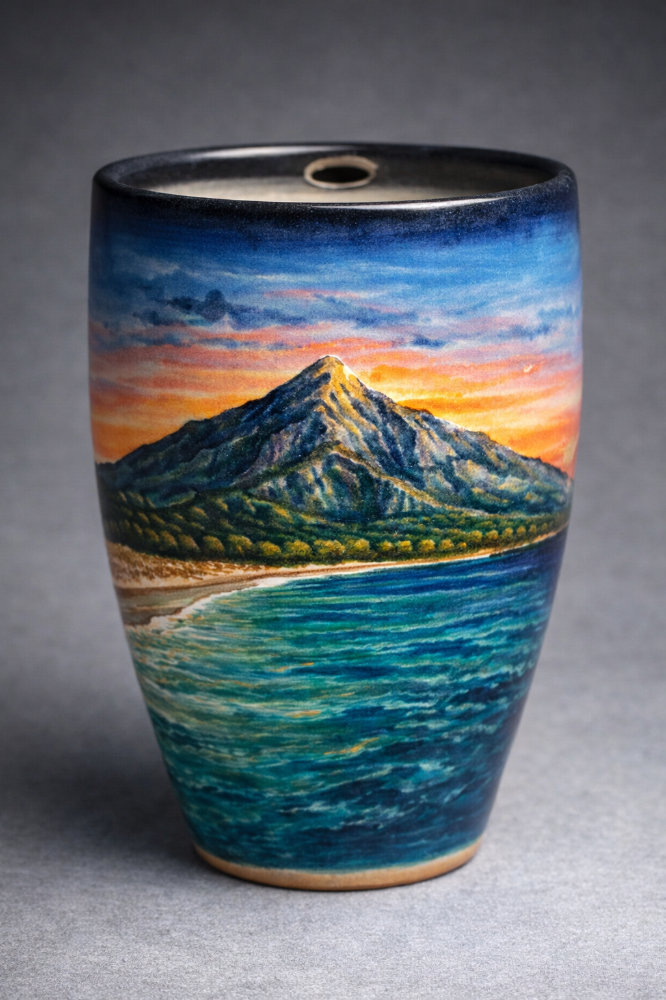

From clay to code
Marbella en las manos, siempre contigo.
AlfarerIA NLP nace de unir la alfarería con la IA para crear piezas cerámicas con memoria de costa, cielos suaves y orgullo por la tierra. Cada taza parte del barro real, se apoya en bocetos generados con inteligencia artificial y vuelve al taller para tomar forma propia.
- Hecho a mano desde el torno
- Diseño apoyado por IA
- Inspiración mediterránea
- Series con alma de recuerdo
Atardeceres suaves, mar esmeralda y la silueta más icónica de Marbella.
Del boceto al esmalte: cerámica artesanal para quienes llevan la costa dentro.
El proyecto
Alfarería, IA y un lenguaje propio.
La marca parte de un hobby muy real: trabajar el barro, practicar torno y dar forma a objetos cotidianos con valor emocional. La IA entra como compañera de taller para reinterpretar bocetos, probar variaciones visuales y ayudarte a imaginar nuevos esmaltes o patrones antes de tocar la pieza final.
El resultado no quiere parecer industrial. Quiere sentirse cercano, sereno y honesto: piezas que recuerdan al mar, a la orilla y a ese momento exacto en el que La Concha se enciende con la última luz del día.
Colecciones
Tres universos para una misma forma de contar recuerdos.
Andalucía
Piezas inspiradas en la identidad andaluza: luz cálida, cal, patios, sierra y mar, convertidos en objetos cotidianos con alma.
- Paleta luminosa y mediterránea
- Referencias al sur, su paisaje y su memoria
- Carácter cercano, artesanal y sereno
Mar
Una línea inspirada en espuma, sal, reflejos turquesa y horizontes en calma. Ideal para piezas limpias, frescas y muy luminosas.
- Paleta turquesa, arena y espuma
- Texturas de orilla y agua en movimiento
- Estética serena para uso diario
Colección destacada
La Concha Sunset Series
Cada taza, un atardecer.
La serie nace de un prompt visual muy concreto: una taza hecha en torno y esmaltada con un paisaje inspirado en La Concha, el mar color esmeralda y un cielo que se mueve entre azul, rosa y naranja.
La Concha Clásica
La silueta más icónica de Marbella, capturada cuando el sol besa la cima y lo cambia todo.
Hay lugares que no se explican, se sienten.
Atardecer en la Bahía
Una versión más tranquila, con mar en calma, cielo degradado y una presencia suave de la montaña al fondo.
No todos los días son intensos. Algunos son solo bonitos.
Mar Esmeralda
Verde-azul intenso, brillo mediterráneo y una sensación muy clara de verano que se resiste a terminar.
Un pedacito de verano que no se acaba.
Pinceladas de Marbella
Una lectura más artística y emocional, como si el recuerdo estuviera pintado directamente sobre la cerámica.
Marbella, pero sentida.
Galería
Piezas nacidas entre referencia real, imaginación visual y torno.
Pulsa en cada miniatura para cambiar la pieza protagonista y descubrir un matiz distinto de la serie.
Interpretación pictórica
Pinceladas de Marbella
Una pieza más libre, con textura de recuerdo pintado y una mirada casi ilustrada sobre la costa.
Proceso creativo
Del barro al esmalte, con una capa digital que ayuda a imaginar mejor.
Idea inicial
Un recuerdo, una vista de Marbella o una emoción concreta sirven de punto de partida.
Boceto con IA
La inteligencia artificial ayuda a probar encuadres, colores, texturas y variaciones visuales.
Torno y pieza real
La forma se construye en el taller, con ritmo manual, tacto y pequeñas decisiones artesanas.
Esmalte con memoria
El acabado final busca que la pieza no solo sea bonita, sino que evoque lugar y pertenencia.
English version
Handmade ceramics shaped by memory, sea light and AI-assisted sketching.
A short English overview for visitors who want to understand the project, the inspiration behind the collections and the spirit of La Concha Sunset Series.
AlfarerIA NLP brings together wheel-thrown ceramics and artificial intelligence to create pieces inspired by Marbella, the Mediterranean Sea and the silhouette of La Concha.
Every object starts with real clay, grows through visual exploration and returns to the studio to become a handmade piece with warmth, texture and a strong sense of place.
Collections
Andalusia: warm light, whitewashed references, sea, mountains and southern identity.
Sea: turquoise reflections, shoreline textures and calm daily rituals.
La Concha Sunset Series: sunset skies, emerald water and Marbella always close to your hands.
Signature line
Slogan: "Marbella in your hands, always with you."
Feeling: relaxed, close and proud of home.
Craft: one handmade piece at a time.
AlfarerIA NLP
Cerámica hecha para quienes no quieren olvidar de dónde vienen.
Una marca para colecciones pequeñas, piezas con historia y objetos que mezclan oficio, tecnología y mirada mediterránea.
Entrar en La Concha Sunset Series